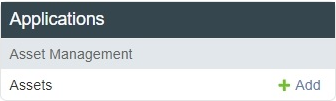
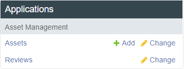

Integration Developer |
  
|
Integration Developer |
|
An Integration Developer primarily deals with integrations. They are able to create, edit, and view their integration. When logging in as an Integration Developer for the first time, the only accessible function in your dashboard will be to create an integration. Clicking on Add will take you to the "Add asset" page where you'll be able to create an integration.

Integrations include the description, installation instructions, support and sales information.
Potential Integration Types
Analytics Plugin – Using Metadata (analytics) SDK, possibly in conjunction with DeepStream, TensorRT, or other libraries.
Camera Plugin – Using video source SDK.
Storage Plugin – Using storage SDK
API Integration – Generic events generated by a system using client API.
Complex Product – Combination of a hardware and software product (i.e., Raspberry PI camera).
Once an integration is created, your dashboard will look like this (see "Asset Management" for more details):

By default, the integration is made available on all customizations. To limit which customizations have access to your customization, please contact Network Optix.
Developers see all previews and drafts of their assets available in the current cloud customization.